Attention: it is now possible to exchange fiat (USD, CND, etc) currencies directly with Doge via the Vault of Satoshi. The below guide is how to convert fiat currencies to Bitcoin, then to Doge. We will add using the Vault of Satoshi once we have gone through the process ourselves!
Buying Dogecoin with USD
Last updated on Jan 28, 2014.
Since there currently/ is no way to directly exchange USD and many other currencies to Doge (yet! announcement), this process is quite a pain in the shibe butt. You can expect this process to take up to 4 - 7 days your first time through. Since most places do not accept a direct exchange, you must first purchase Bitcoin (BTC), then convert BTC to Doge.
In order to convert Bitcoin to Dogecoin, you will need a:
- Bank account
- Phone number
I documented every step along the way, so enjoy this guide fellow shibes!
1 - Get your Bitcoin wallet
The first step in your quest is to acquire a bitcoin wallet for storing your monies. I suggest and have the most experience with Multibit, although any wallet from this list would work.
Note: For currency conversion as we're doing from BTC to DOGE, I suggest using an online or lightweight wallet over an offline wallet (such as bitcoin-qt) to avoid having to download the 4+ year Bitcoin block chain.
After downloading Multibit, open the application and locate your bitcoin address which can be found under "Request". This will be needed to receive the bitcoins you purchase.
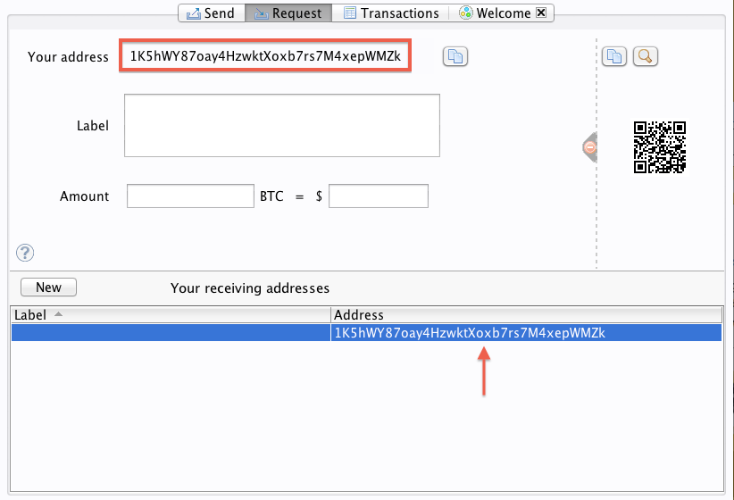2 - Sign up with a bitcoin exchange
To buy bitcoin, you will need to setup an account with a bitcoin exchange. I suggest and have the most experience with coinbase, although any exchange from this list would work. With coinbase you are required to verify your phone number and bank account. If your bank account does not allow for instant verification, coinbase will make two small deposits into your bank account for verification (similar to PayPal). This will take a few business days to show, many patience!
Verifying phone number with Coinbase:
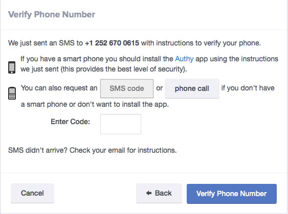Verifying back account with Coinbase:
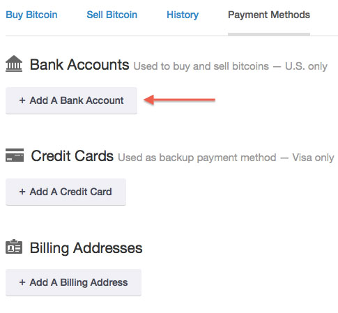 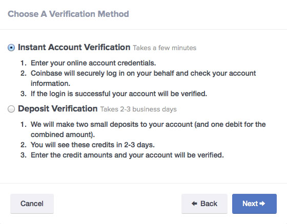 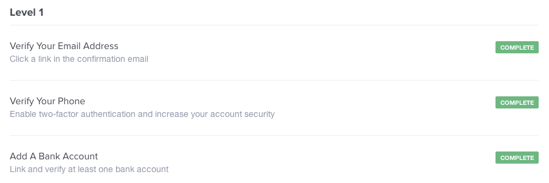3. Purchase Bitcoin
With your phone and bank account verified, you can now purchase Bitcoin. Such success, many happy!
Choose “Buy/Sell” from the left sidebar and enter the amount of Bitcoin you want to purchase. Entering any amount of BTC will update your total, no need to maths!
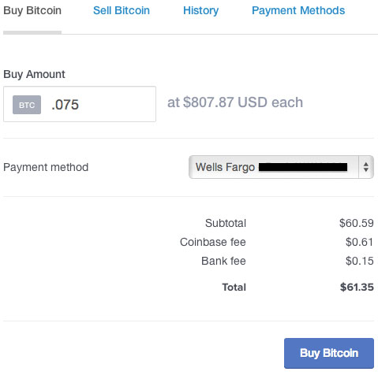After you’ve submitted the amount of BTC you want to purchase, you will be asked to verify the transaction.
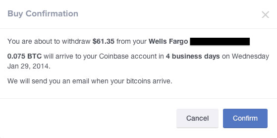Once you have confirmed the transaction, you play the waiting game until your BTC arrives. While you wait for your BTC arrive, I suggest beginning packing for your trip to the moon!
4. Receive your Bitcoin
When your BTC has arrived, it’s time to send it to your Bitcoin wallet using the send address provided from step 1. Choose “Send/Request” from the left sidebar and select “Send Money”.

Then input your send address and how much BTC you want to deposit.
Note: The send address should be the Bitcoin wallet address you created through Multibit back in step 1.
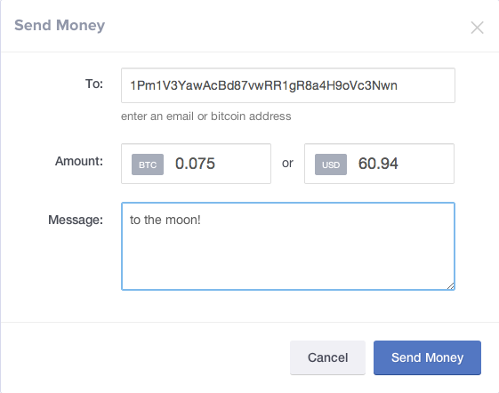5. Sign up with a trade exchange
To convert your BTC, you will need to setup an account with a trade exchange. I suggest and have the most experience with Cryptsy, although any exchange from this list would work. Hold tight, you’re almost there!
To start the process of converting your BTC to doge, you will first need to deposit the BTC you've purchased into your Cryptsy account. Visit "Balances" from the navigation menu, select the "BTC actions" button for Bitcoin and choose "Deposit".
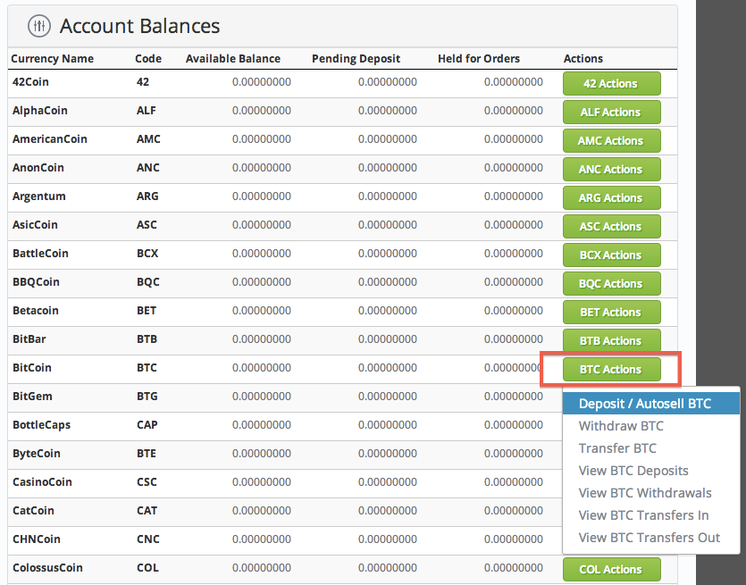You will need to generate a new deposit address to dump your BTC into your Cryptsy account.
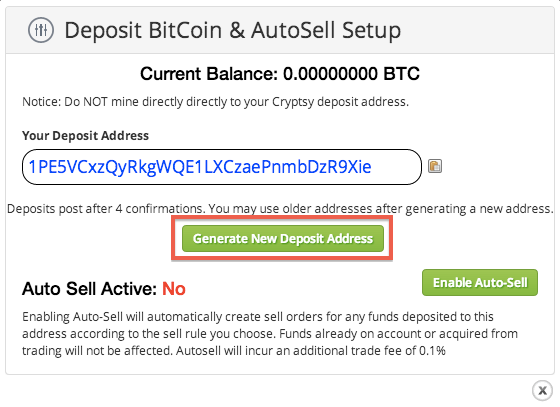After sending BTC to your Cryptsy account, it's officially time to convert to Doge and buy your ticket to the moon!
6. Converting Bitcoin to Doge
Ok, ready? You’ll need to visit the DODGE/BTC trade market page, which can be found here. On this page, you will see the option to buy DOGE with BTC.
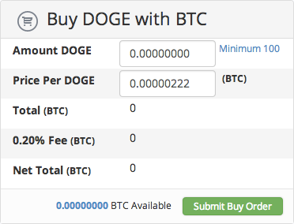Enter the amount of doge you want to purchase and then submit your buy order.
Note: You may get a price alert notifying you that you are buying higher than the current selling price. If you receive this message, cancel and modify the "Price per DOGE" to match the current top selling price, then resubmit your buy order.
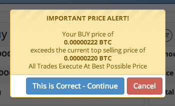You will receive an order confirmation screen after submitting your buy order. Confirm for much coin!
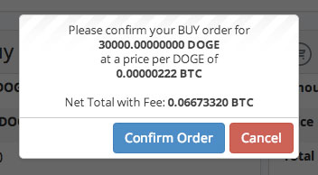7. Receive your converted Dogecoin
With your BTC officially converted to Dogecoin it’s time to cash out, many applause!
Revisit the "Balance" from the navigation menu, select the "DOGE actions" button for Dogecoin and choose "Withdraw".
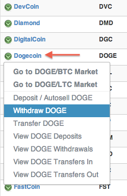Choose the send address for your Dogecoin wallet, enter the amount of Doge you want to send and process the withdrawal.
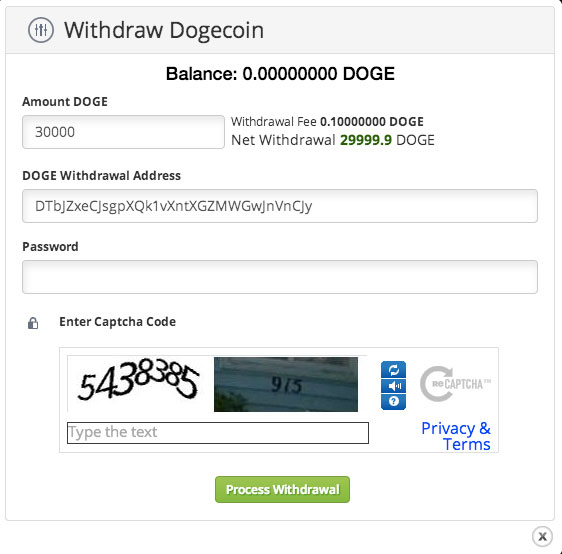8. To the moon!
You should now see you hard earned monies in your Dogecoin wallet, many congrats shibe!